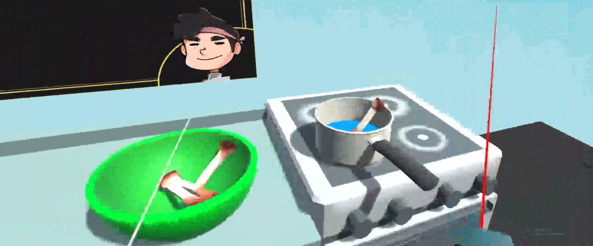
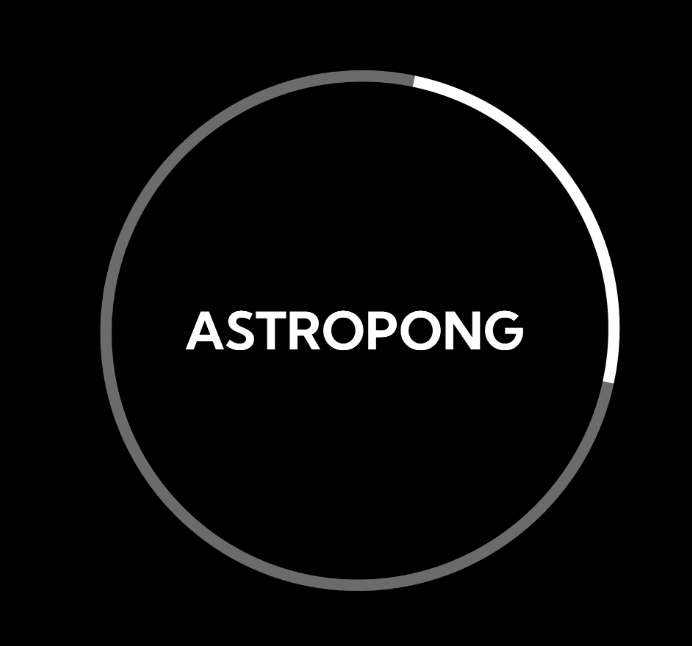
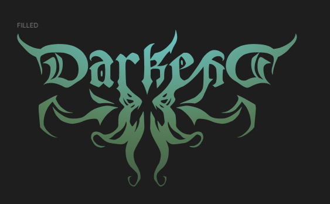
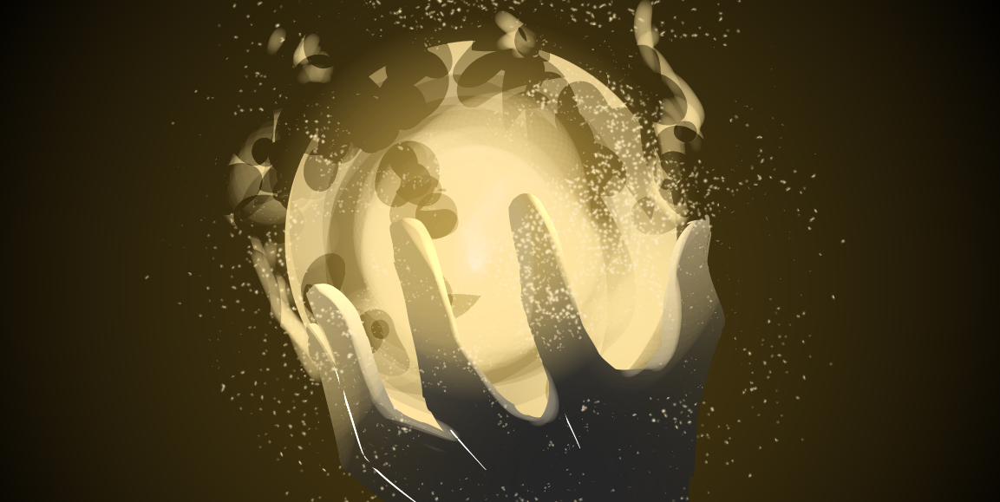
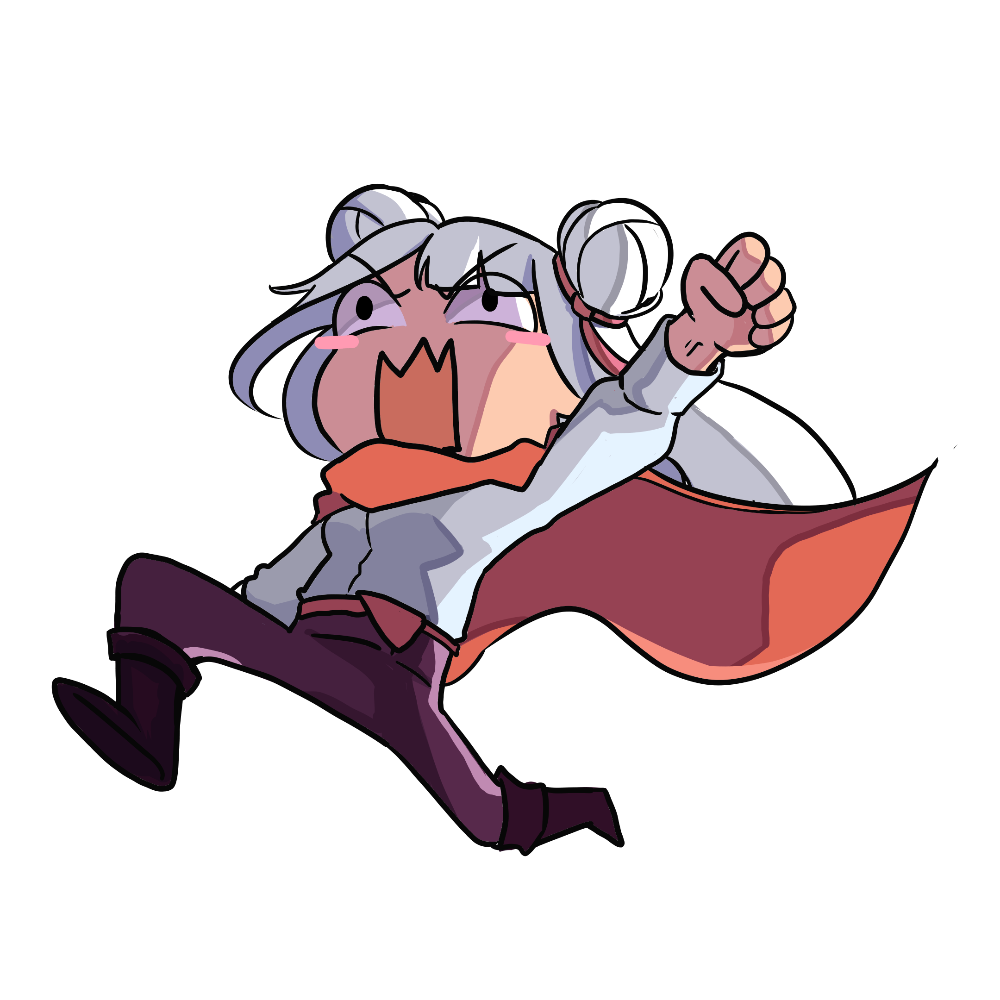

|
Hello my name is Maia Francine Endaya. I have dabbled into many aspects of video game development, such as coding, game design, and game art. But I have found that I mainly specialize in game art, both 2D and 3D. Below are game art programs that I have experience with: But, I do not just specialize in game art, I have also dabbled in the technical side of game development. Below are game engines I have experience in: |
|  |
SaluSalo: A VR Filipino Cooking SimSaluSalo is a Virtual Reality cooking simulator with a focus on Filipino Cuisine. This is one of the major projects that helped fluorish my 3D Modelling skills. As I continued working on the projects, I find myself learning new things about the process of 3D modelling. |
|  |
AstropongAstropong is a hypercasual game that combines the two classic arcade games; Asteroids and Pong. I was responsible for the visuals of the game and have done a bit of coding for the game. I was also responsible for the background music for the game, which allowed me to dabble into the audio-engineering side of the development. |
|  |
DARKENDDarkend is an upcoming roguelike action game where you will be fighting against froces of evil. This is another project where I explored my skills in doing pixel art. At this point, I have brushed up my skills enough to know how to be meticulous with pixel placement. It also allowed me to learn new techniques in animating pixel art. |
|  |
Let There Be LightLet There Be Light is a puzzle-platformer game where you must bring light back to the world by ascending the tower with the orb. This is the project that allowed me to explore pixel art. It became the starting point for my own pixel art journey. This project also made me discover the process of level design. |
|  |
Nigeru Ohime-sama!Nigeru Ohime-sama! is a stealth game where you help a princess escape the castle. While I have not done major assets, I was tasked with the level design. In the process, I learned to love making game spaces that build the game world and to challenge the player. This is also a project where I delve into audio design. |
CHED Interactive MapAn Interactive Map for Commission of Higher Education's Office. I have worked as a project tracker, keeping track of the progress and updates of the project. From here, I learned how to track the progress of projects, which I apply for my personal projects. This is also a project where I learned a bit of web development. |
|

|
VR Proof of ConceptDuring an internship with Techcare, I was tasked to make a waiting room for VR. Along the process, I learned a lot about VR development and had since sparked my interest in making virtual worlds for VR and AR. It has honed my 3D modelling skills and environment/level design. |